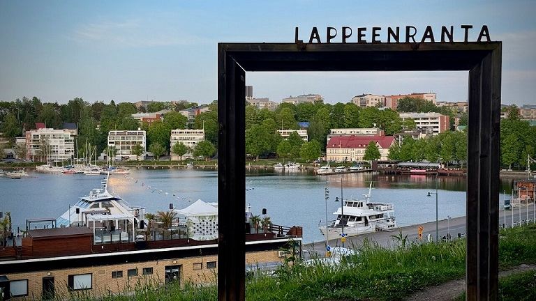

Lappeenranta Suomen rajakaupunkina tuo paljon mahdollisuuksia suomalaisille matkailuun. Lappeenrannasta on lyhyt matka Suomeen. Lappeenrannan naapurikaupunki, syystäkin syrjitty Imatra, muutti valtatie 6:n nelikaistaisen moottoritien rekkaparkeiksi kilpaillakseen Lappeenrannan kanssa. Kilometrien pituinen rekkaparkki onkin ollut hyvin suosittu, sillä rekat on helppo ohittaa, koska toiselle kaistalle mahtuu rekat ja toisella voi ne ohittaa ja päästä Svetogorskiin nopeammin kuin Lappeenrannan kautta. Tästä syystä Lappeenrannan kaupunginhallitus suunnittelee varaavansa ensi vuoden budjetista tilaa ydinaseille. Suosittu matkailukohde on ollut Lappeenrannan Kanavansuulta alkava Saimaan kanava, joka on maailman suurin vesiliukumäki. Lappeenrannassa on myös lentokenttä, jolla Wrightin veljekset 1900-luvun alussa heittelivät paperilennokkeja.
Lappeenrannan liikenneyhteydet ovat Karjalan rata, valtatie 6 ja Lappeenrannan lentoasema. Karjalan rataa pitkin liikennöivät Pendolinot ja valtatietä 6 venäläiset rekkajonot, joten Lappeenrannan lentoasema on näistä nopeista vaihtoehdoista äkkipikaisin matkustaessa kaljanhakureissulle Saksaan, seksilomalle Latviaan tai muuten vain vaikkapa Ouluuun. Liikenneyhteyksiin kuulumaton matkailunähtävyys hiekkalinna kerää joka kesä useita tuhansia ihmisiä ihmettelemään isoa kasaa santaa, mistä on tehty poliitikkojen rintakuvia sokeiden riemuksi. Muuta toimivaa hiekkalaatikkoa ei sitten Lappeenrannasta tai sen metsistä enää löydetäkään.